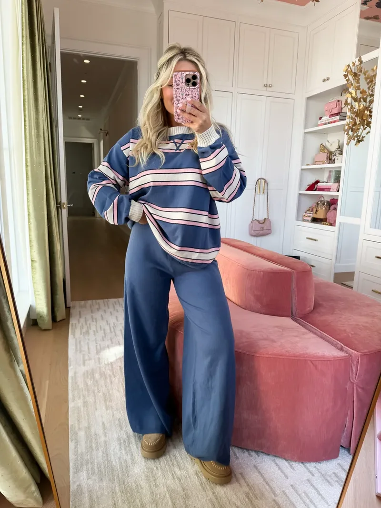
The Presidents Day Sales I’m Actually ShoppingFashion, Feb 2026
Whitney Rife. Wife, mother, CEO. Fashion and lifestyle from Murrells Inlet, South Carolina.

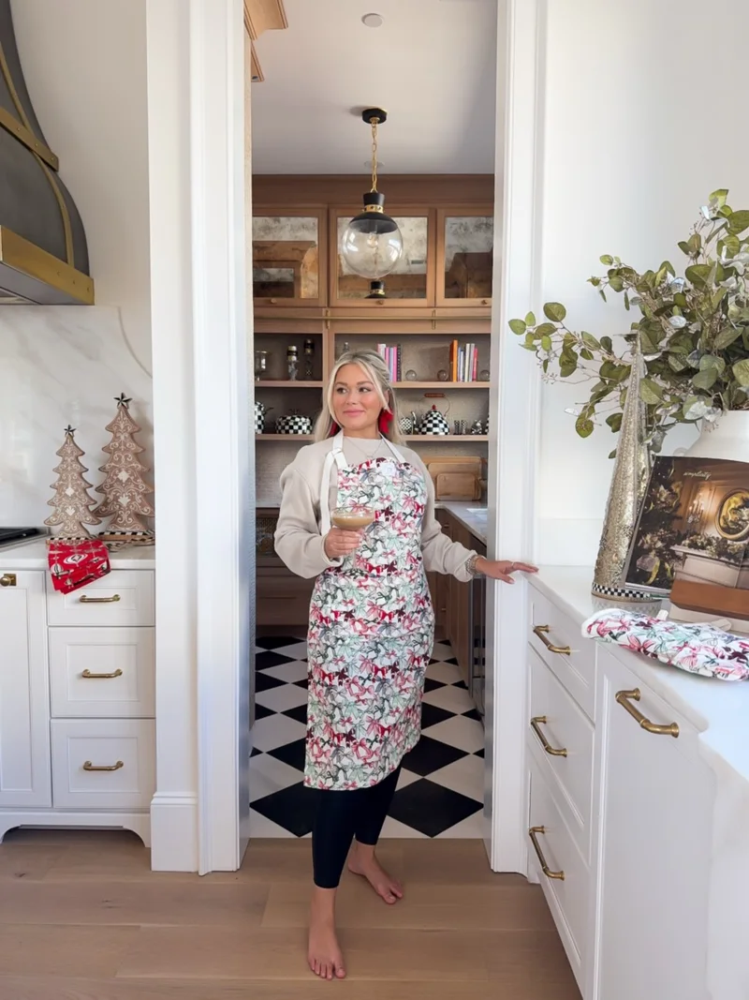
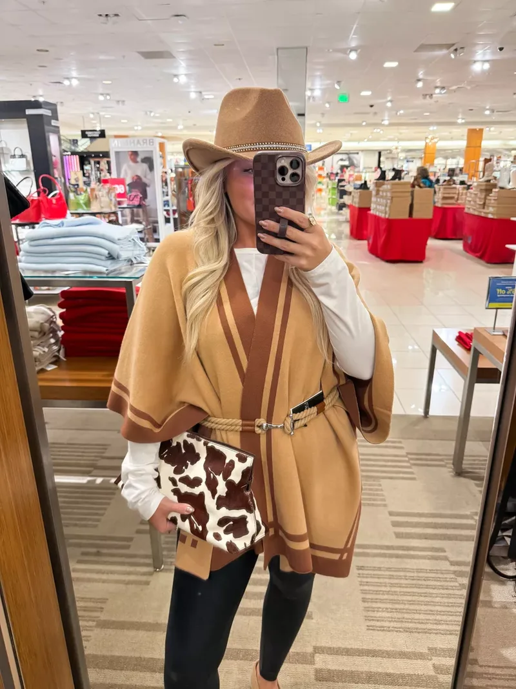
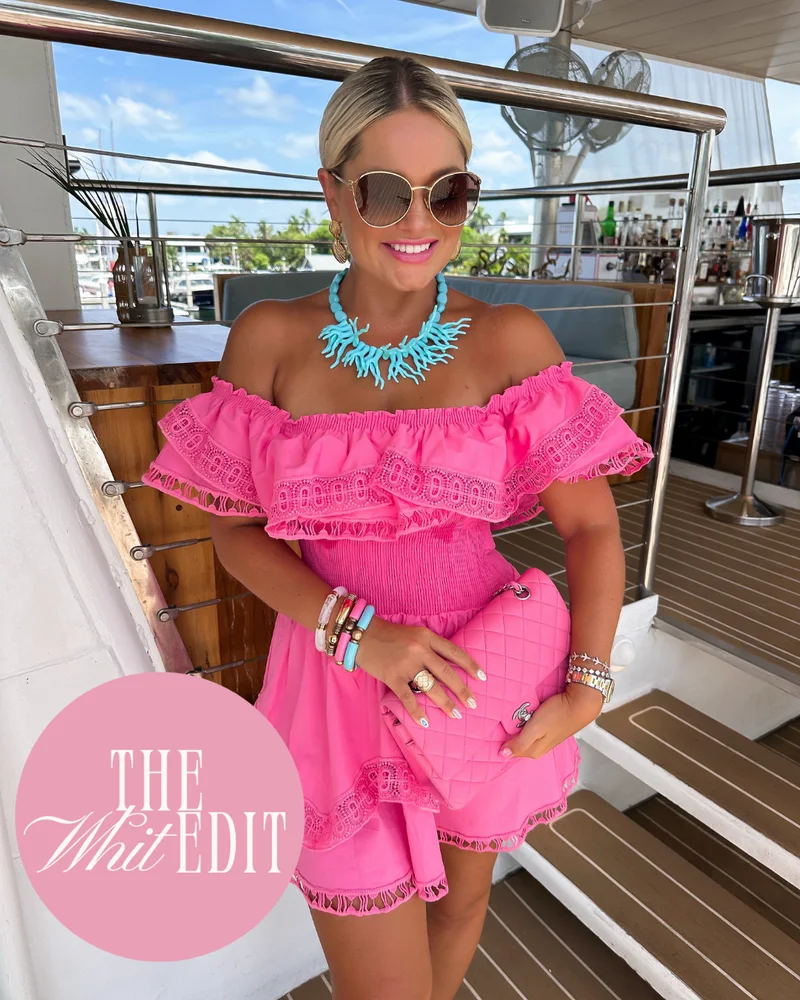
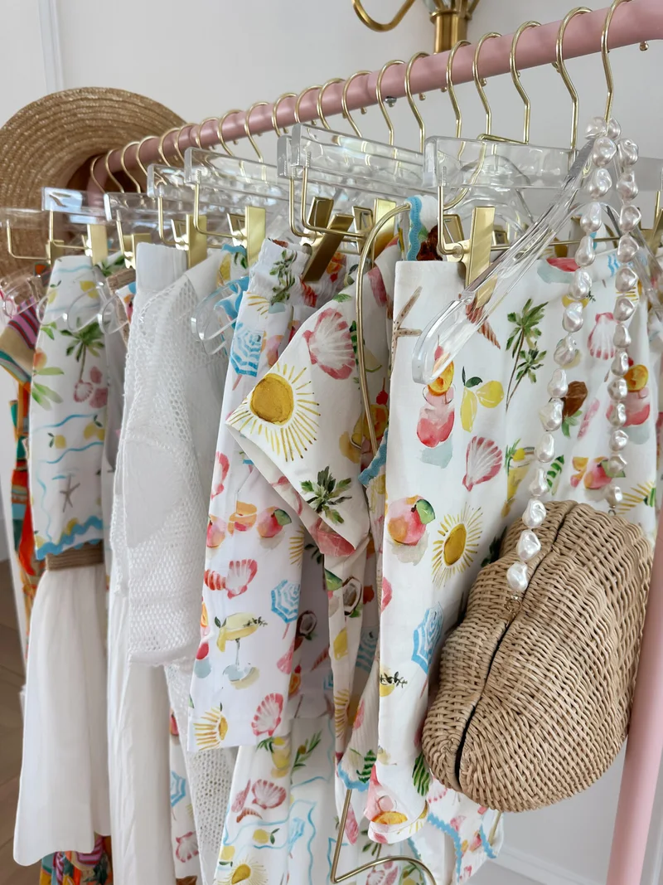
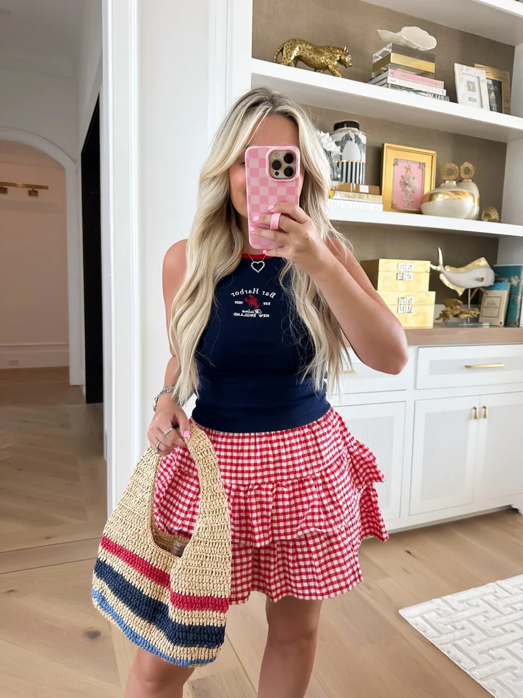
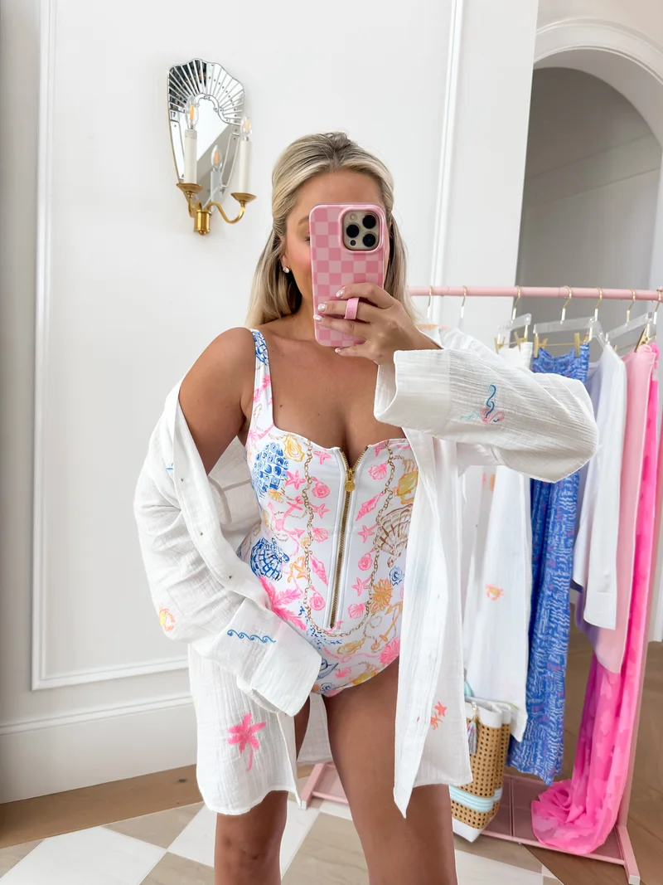
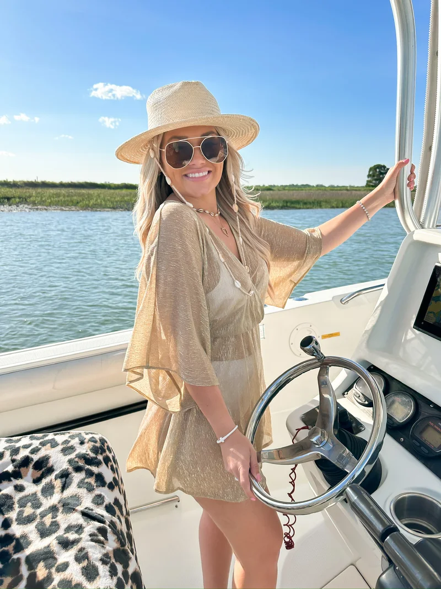
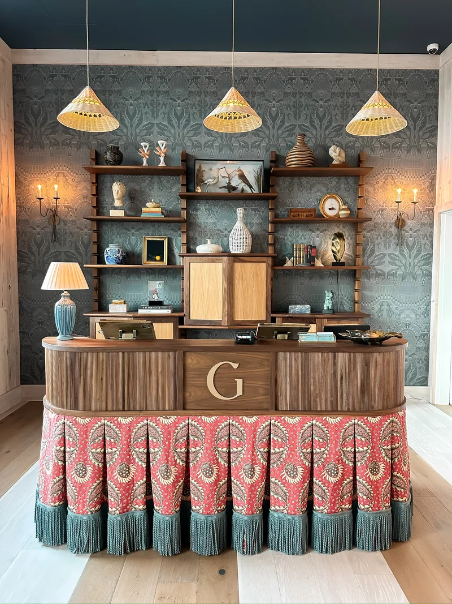
Everything I wear and link, in the four places I keep it.
Try ons, travel guides, holiday roundups and the odd family recap.
I don’t know about you, but January somehow felt a hundred days long, and now suddenly it’s Valentine’s weekend and Presidents Day and I’m wondering how we got here so fast. Warm weather is honestly right around the corner, which has me in that in-between mood of still cozy but…
It’s officially that magical time of year when my kitchen smells like cinnamon, there’s flour on every surface from baking, and I’m constantly fluffing pillows and tying bows. I’ve been in full holiday-hosting mode, and this season I’ve loved bringing in little touches from the Sewing Down South x Belk…
I popped into Belk this week and found so many fall staples worth adding to your closet. Think elevated basics with a little personality like printed shoes, statement heels, and yes… a whole lot of leopard (because when is leopard not a neutral for me?). This try-on is full of…
Let’s talk about something we all secretly want: photos that look like they belong on an influencer’s feed. You know the ones—soft, dreamy colors, perfect lighting, and that effortlessly cool vibe that makes you wonder, how do they do it? Well, spoiler alert: it’s not magic. It’s presets. I’m so excited…
I swear, it’s like Walmart has cracked the code on seasonal perfection. Every year, there’s this moment when you walk through their clothing aisle and think to yourself, “Wait a second…did I just teleport into some undiscovered boutique?” But, nope. It’s just Walmart, being low-key amazing again. Take this white…
There’s something just about summer… maybe it’s the longer days that stretch into slow evenings, or the way the ocean makes even your bad hair days seem intentional. Whatever it is, summer deserves its own wardrobe in an effort to capture that unnamable, magical feeling. A collection of pieces that…
Memorial Day weekend here, and with it comes an unspoken (but universally accepted) invitation to eat all the potato salad you want, drink something fizzy out of a red cup, and dress like you’re about to star in a Fourth of July movie montage. Because, really, what’s Memorial Day if…
What feels more like summer than Lilly Pulitzer? Seriously, their new collection is chef’s kiss! The swimwear is perfection, the patterns are fresh, and everything feels so effortlessly high-end this season. Whether it’s lounging by the pool, grabbing a beachside coffee, or hitting up a summer soirée, the latest drop…
There’s something about salt air, live oaks, and the distant chatter of seagulls that makes even the simplest coffee-and-bagel situation feel romantic. Whether you’re the “brunch-repeat-nap-repeat” type or someone whose idea of a good time involves boats, dolphins, and late-night bar hopping, trust me, this little slice of Lowcountry paradise…
You know those little towns that sneak up on you and suddenly you’re plotting how you’ll manage to move there, open a bookstore (which is probably haunted but in a charming way), and drink coffee on your leafy porch forever? Yeah. Georgetown, South Carolina is one of those places for…
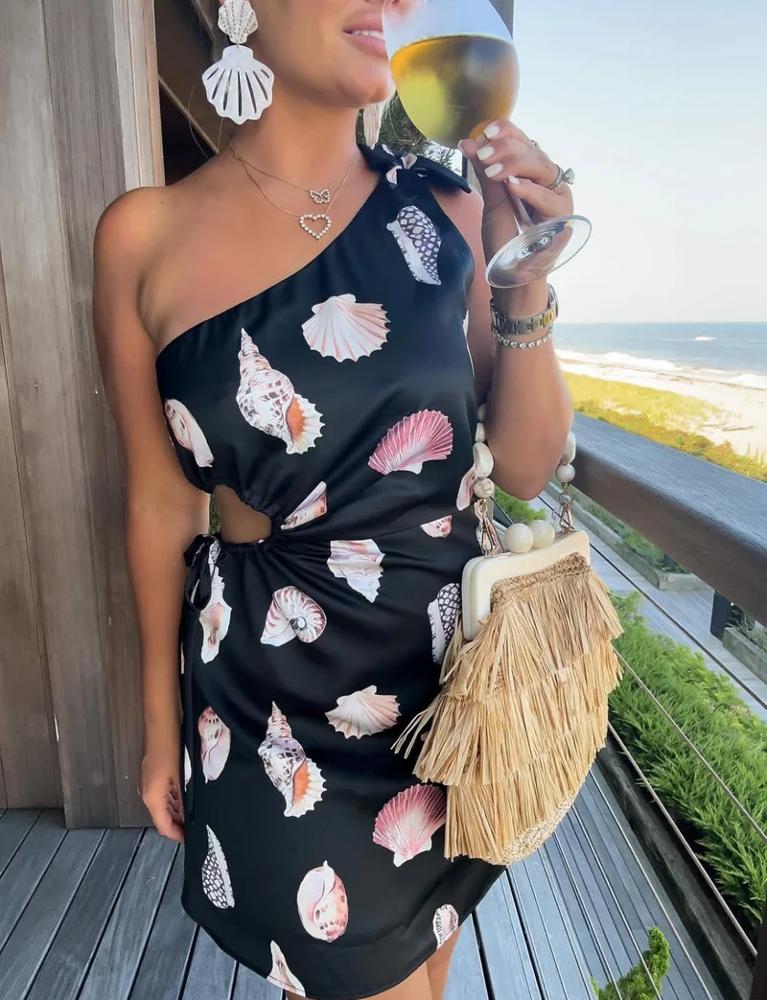
If you ask me, Myrtle Beach isn’t really a place for “shoulds.” You shouldn’t stick to your diet. You shouldn’t skip dessert. You definitely shouldn’t just stay in one spot. What Myrtle demands is a little wanderlust and a lot of appetite. Here are my absolute favorite places to eat,…
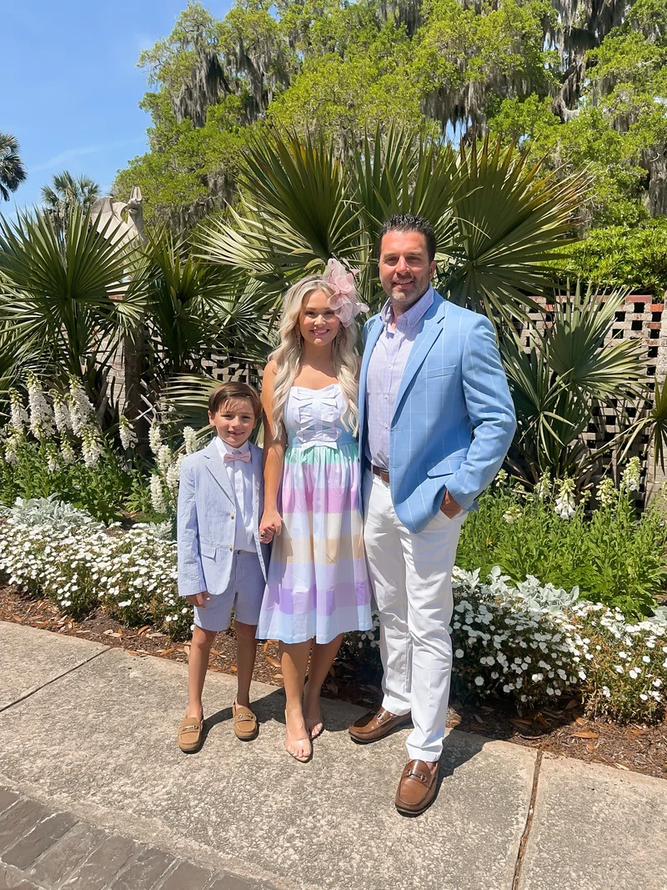
I hope you all had the best Easter Sunday! We truly lucked out with the most gorgeous weather. It’s the kind of sunshine that just makes you want to be outside all day, and we took full advantage of it. Our little crew (Bo, Shawn, and I) kept the weekend…
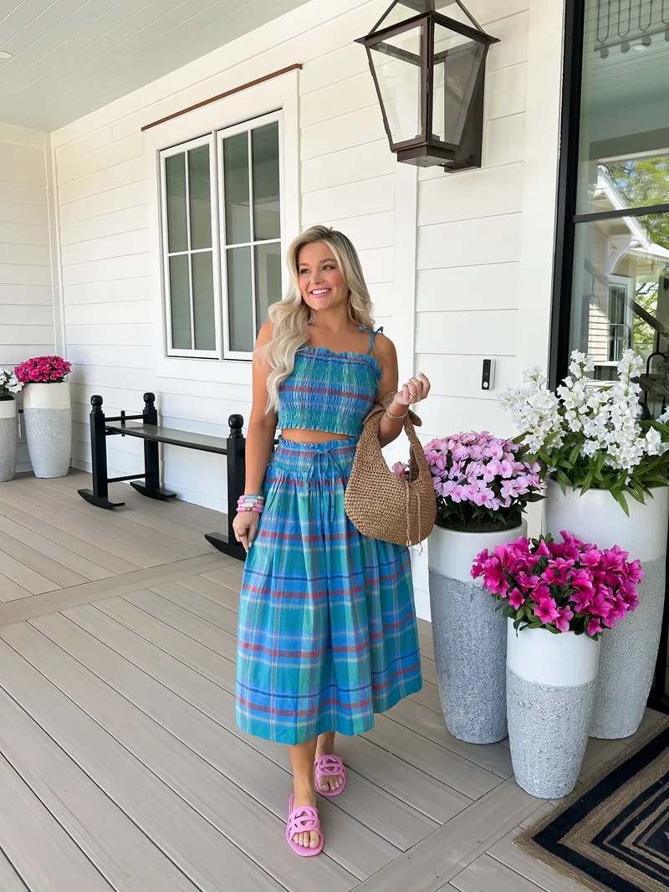
From breezy maxi dresses to pastel sets, you won’t believe all the fun and gorgeous spring styles I found at Walmart right now. These pieces are perfect for transitioning into summer! Whether you’re looking for chic sundresses, comfy sandals, or fun accessories, Walmart has everything you need to stay stylish…
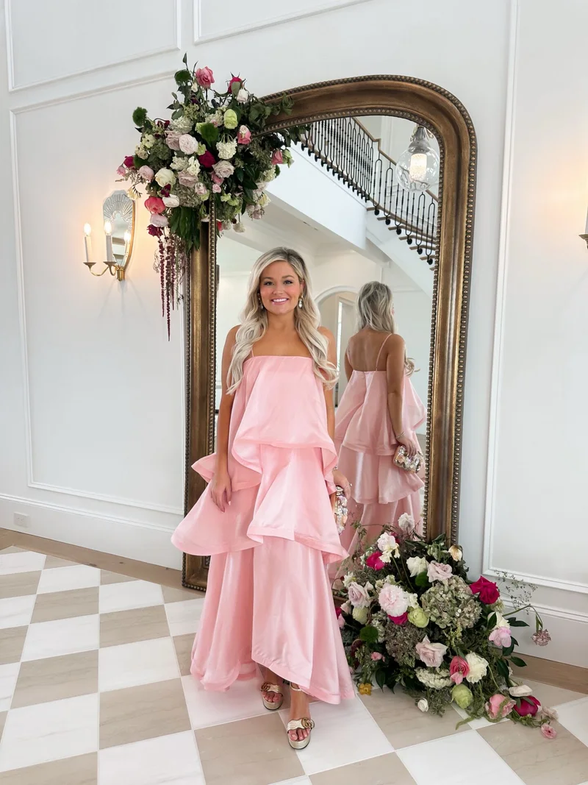
Wedding season is here, and that means one thing: the perfect excuse to dress up! Whether you’re attending a romantic garden ceremony or a glamorous black-tie event, finding the right outfit is the best part of being a wedding guest. And since we just finished celebrating my brother’s wedding I…
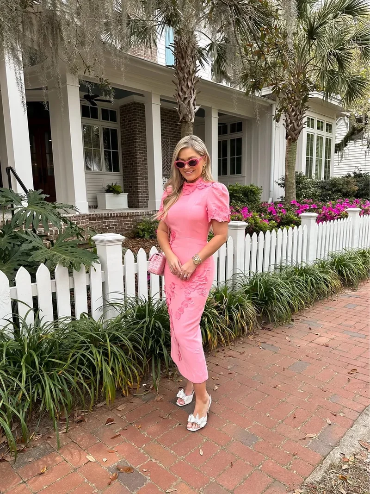
Spring is here, and you know what that means—it’s time to pick out the perfect Easter dress. I’m so excited to share that my favorite Easter dress is finally back in stock (yay!). Plus, I’ve scouted out some seriously adorable finds on Amazon that I just know you’ll love too.
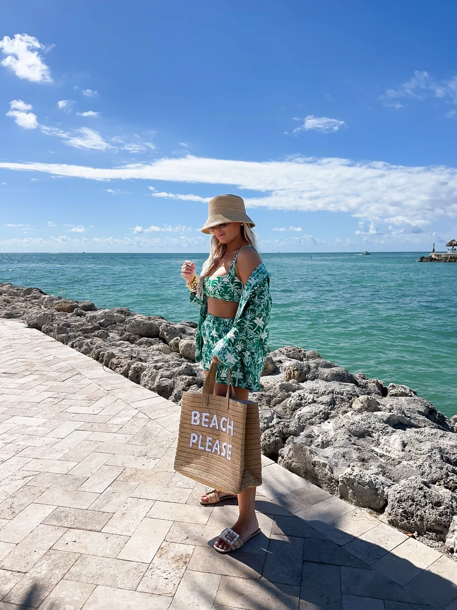
Spring is finally here, and you know what that means—spring break plans, blooming flowers, and the perfect excuse to refresh your wardrobe. I don’t know about you, but I love finding those perfect pieces that are affordable, fun, and versatile enough to wear for any occasion. Luckily, Amazon has everything…
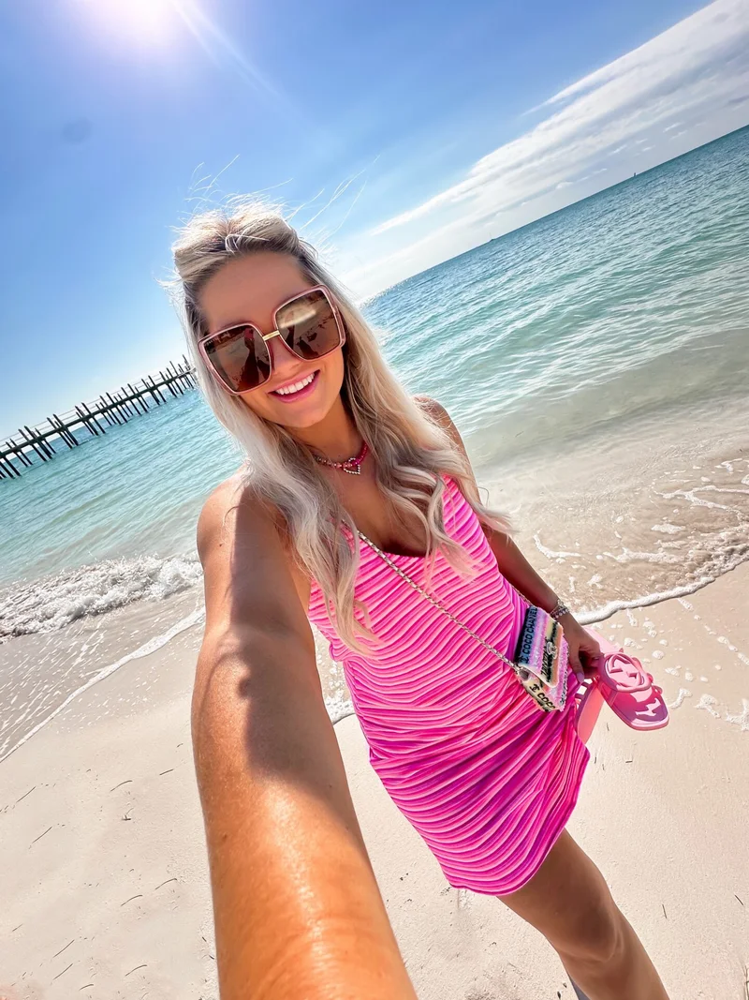
If you’ve been following along for any amount of time you know we absolutely love the Keys and visit as much as we can. Right now, with this transitional spring weather I knew I had to pack pieces that were not only cute but also light and breezy for those…
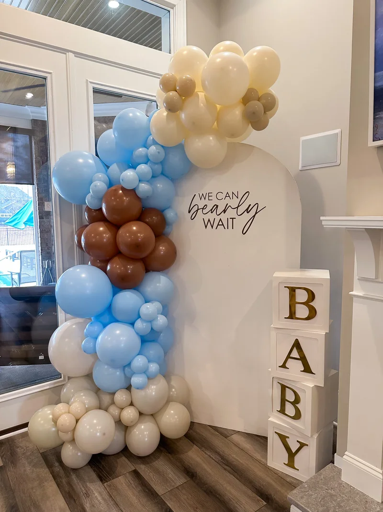
Planning a baby shower is always special, but throwing a bear-themed baby shower for a sweet baby boy? That’s a whole new level of adorable! I loved every moment of planning this charming celebration, and it was truly the sweetest day spent with the most amazing group of girls. If…
Spring is here, and it’s officially time to swap out those winter neutrals for something a little more… fresh! This season, I can’t stop obsessing over the easy charm of pastels—they’re soft, chic, and make day-to-day dressing feel so much lighter. And the best part? You don’t need to break…
What a weekend, you guys! Bo, Shawn, and I headed up to Sugar Mountain, and I just have to say—it was the perfect little escape we needed. Growing up, I spent so many weekends here, so it feels extra special to bring Bo and create new memories with him in…
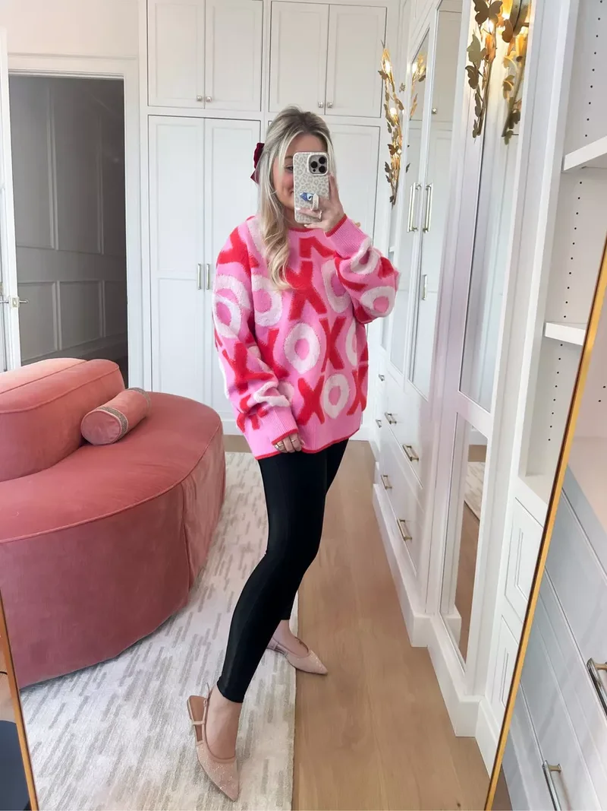
Hey loves! Valentine’s Day is just around the corner, and whether you’re celebrating with your partner, hosting a Galentine’s bash, or simply indulging in a little self-love, I’ve rounded up a few of my absolute favorite finds that are perfect for the season. From festive home decor to budget-friendly treats,…
Nothing in this category yet.
Tap a code to copy it, then paste it at checkout.
“Myrtle Beach isn’t really a place for ‘shoulds.’ You shouldn’t stick to your diet. You shouldn’t skip dessert. You definitely shouldn’t just stay in one spot.”From my Myrtle Beach guideAll travel posts
If you ask me, Myrtle Beach isn’t really a place for “shoulds.” You shouldn’t stick to your diet. You shouldn’t skip dessert. You definitely shouldn’t just stay in one spot. What Myrtle demands is a little wanderlust and a lot of appetite. Here are my absolute favorite places to eat,…
There’s something about salt air, live oaks, and the distant chatter of seagulls that makes even the simplest coffee-and-bagel situation feel romantic. Whether you’re the “brunch-repeat-nap-repeat” type or someone whose idea of a good time involves boats, dolphins, and late-night bar hopping, trust me, this little slice of Lowcountry paradise…
You know those little towns that sneak up on you and suddenly you’re plotting how you’ll manage to move there, open a bookstore (which is probably haunted but in a charming way), and drink coffee on your leafy porch forever? Yeah. Georgetown, South Carolina is one of those places for…
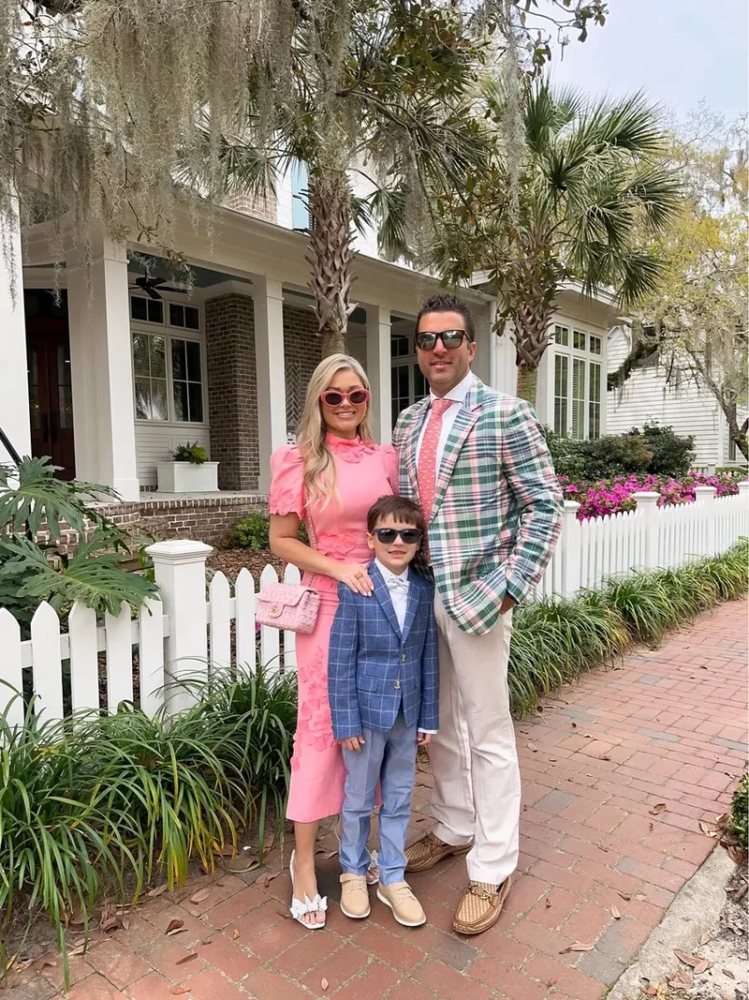
In October of 2011, I started my blog The Retail Therapist. In 2014, I opened my first boutique and named it The Retail Therapist, re-branding my blog to WhitneyRife.com.
I am married to my prince charming, Shawn, and we have the most darling little boy, Bo, who is the best part of us both. It is often hard keeping up with my family, my store, and my blog but I am excited to share my crazy, beautiful life with you as this IS a blog dedicated to being a source of inspiration for women and young girls who love fashion, beauty, traveling, decor and family life.
XO, Whit
New try ons, sales and gift guides, straight to your inbox.